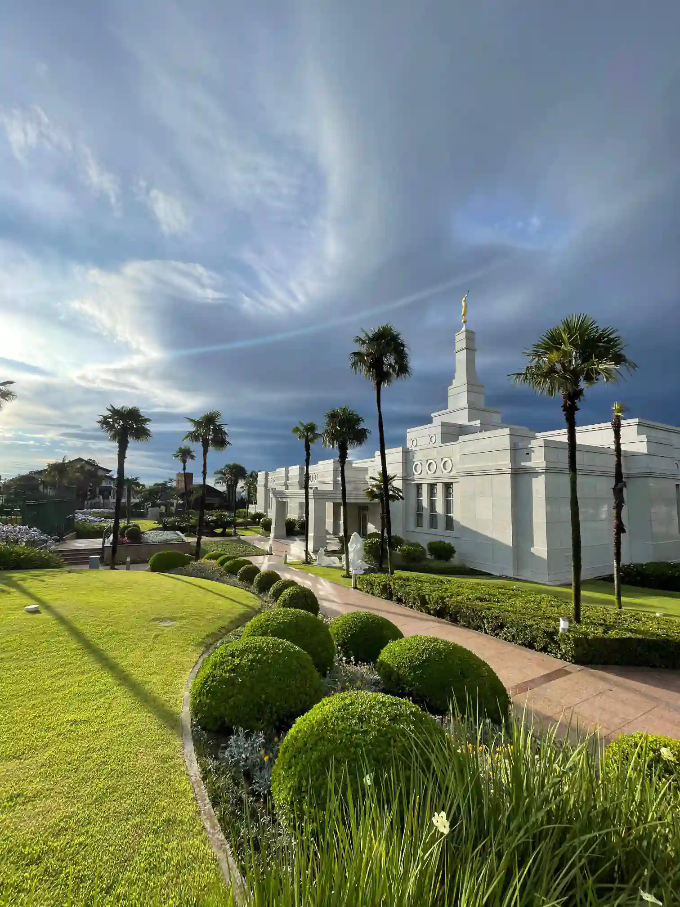

About Me
Hi, I'm Vinicius Araujo an enthusiast in programming, I've a certificate in electronic and know a hardware enough cause is the area of my work, I like to play video games, study the scriptures and learn new languages.
Gravatai, RS
I was born in Cachoeirinha, Brazil, and I am a member of The Church of Jesus Christ of Latter-day Saints. I am currently living in Gravatai, Rio Grande Do Sul - Brazil, where I am studying at BYU-Idaho.
Gravatai is a small city that is part of the metropolitan region of the city of Porto Alegre. There are not many things for tourists to do in the city, but there are some mountains to climb and places to go hiking. It is a very quiet city and very well located in the state of Rio Grande do Sul.